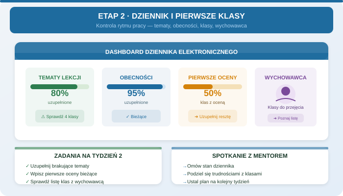

Zadania mentora
- Sprawdzić kompletność tematów i obecności w dzienniku.
- Omówić pierwsze sytuacje z klasami.
- Wskazać wychowawców i zasady kontaktu z nimi.
- Wyjaśnić, kiedy dokumentować rozmowę z rodzicem.
Etap 2
Cel: sprawdzić rytm prowadzenia dziennika, pierwsze doświadczenia z klasami i kanały konsultacji z wychowawcami.

Wpisz: klasy wymagające uwagi, pytania do wychowawców, zaległości w dzienniku i termin ich zamknięcia.
Mentor prosi o opis faktów, nie etykiet: co robi klasa, kiedy, na jakiej lekcji i jaka reakcja działała. Następnie ustala jedną zasadę do konsekwentnego sprawdzenia.